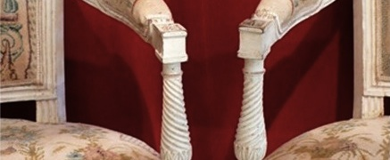
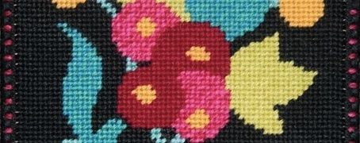
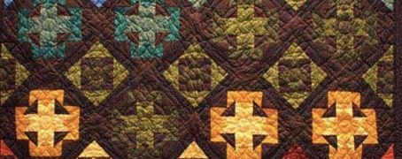

Activités Saint-Nicaise
Une association, loi 1901, qui propose des loisirs créatifs et favorise le lien social entre ses membres sur la région de Rouen
ASN vous accueille à la maison des Saint-Nicaise 18, rue Poussin à Rouen. Elle vous propose différents ateliers créatifs qui se déroulent par groupe d'une dizaine de personnes avec les conseils d'un animateur ou d'un professionnel de l'activité.
-

Réfection de fauteuils
Restaurez vos sièges de style avec des techniques traditionnelles : sangles, ressorts, crins… et l'aide d'un professeur diplômé.
-
Nettoyage de tableaux
Du nettoyage à la remise en état, pour faire revivre des tableaux anciens.
-

Tapisserie à l'aiguille
Un atelier de tapisserie au point pour coussins, avec des conseils de l'animateur.
-

Patchwork
A propos des points, des carrés et des quitts pour créer des ouvrages décoratifs.
Echanges et partage de techniques entre membres du groupe.